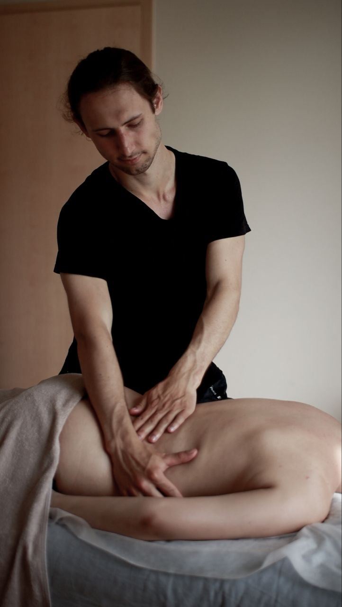

Piņķi · Babīte · западная Рига · Jūrmala
Стол, бельё, масла и всё необходимое привезу с собой. После массажа не нужно снова садиться в машину и ехать домой.
Выезд от 90 минут · приезжаю за 10–15 минут · приватный формат

Приезжаю в Piņķi, Babīte и JūrmalaТри причины, по которым массаж дома оказывается удобнее и приятнее, чем поездка в студию.
Не нужно подстраиваться под график города, искать парковку и тратить часы на дорогу.
После хорошего массажа самое ценное — сразу остаться дома, не выходя на улицу.
Ваш дом — ваши правила. Формат для тех, кто ценит личное пространство.
Любой массаж из полного меню услуг с выездом к вам. Формат зависит только от длительности сеанса.
В меню — полный список техник: классический, спортивный, расслабляющий и другие. Подберём под ваш запрос.
Цены на странице не публикуем — актуальный прайс и PDF‑меню пришлю в WhatsApp за пару минут.
Узнать цены в WhatsAppВсё оборудование и детали — на мне. От вас нужно только место и удобное время.
Пишете в мессенджер — согласуем время, адрес и пожелания по массажу.
Приезжаю за 10–15 минут до начала. Привожу складной стол, чистое бельё, масла премиум‑класса и музыку.
От вас — свободное место примерно 2×3 метра и комфортная температура в комнате.
После сеанса аккуратно и быстро собираю оборудование, оставляя вас в состоянии полного покоя.
Чаще всего это Piņķi, Babīte, Иманта, Золитуде, Спилве, Priedaine, Lielupe, Bulduri и остальная Юрмала — то есть западное направление, где я и принимаю в студии. По другим районам Риги тоже выезжаю, а дальше — обсудим индивидуально в переписке.
Условия оплаты, предоплаты и сроки бронирования уточняю индивидуально под ваш запрос — просто напишите.
Только свободное место около 2×3 метра и комфортную температуру. Стол, бельё, масла и музыку привожу с собой.
Напишите удобным способом — согласуем время и детали за пару минут.
Удобнее приехать самим? В студии FIFTY — уютное пространство и онлайн‑запись. Массаж в Piņķi и Saliena →